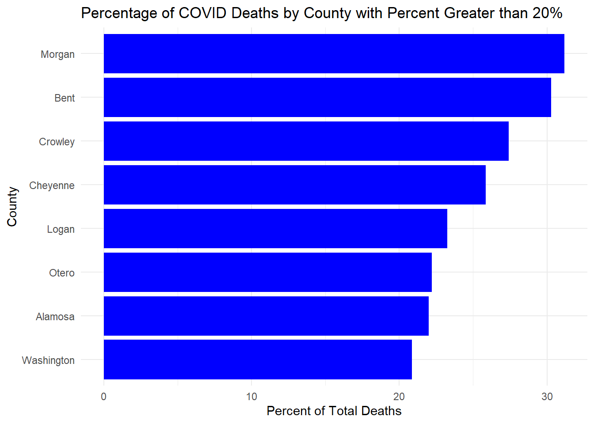

The census data includes information on population size, births, deaths, and migrants from either domestic or international locations. It is summarized by state and county.
#Question 3
mostPC <- mostcases %>%left_join(fivefip, by ="fips") %>%mutate(casespercapita = cases / POPESTIMATE2021) %>%select(county, state, fips, casespercapita)mostPC_tab <-flextable(mostPC, col_keys =names(mostPC)) %>%set_caption(caption ="Table displaying the number of COVID-19 cases per capita in the 5 Colorado counties with the greatest number of cumulative cases as of February 2nd, 2021. ")mostPC_tab
county
state
fips
casespercapita
El Paso
Colorado
08041
0.2314879
Denver
Colorado
08031
0.2235128
Arapahoe
Colorado
08005
0.2196147
Adams
Colorado
08001
0.2421344
Jefferson
Colorado
08059
0.1950050
#####newPC <- mostnew %>%left_join(fivefip, by ="fips") %>%mutate(casespercapita = newcases / POPESTIMATE2021) %>%select(county, state, fips, casespercapita)newPC_tab <-flextable(newPC, col_keys =names(newPC)) %>%set_caption(caption ="Table displaying the number of new COVID-19 cases per capita in the 5 Colorado counties with the greatest number of cumulative cases on February 2nd, 2021. ")newPC_tab
county
state
fips
casespercapita
El Paso
Colorado
08041
0.0008544841
Arapahoe
Colorado
08005
0.0006104848
Denver
Colorado
08031
0.0005467576
Adams
Colorado
08001
0.0006226793
Jefferson
Colorado
08059
0.0005011167
#Question 4:
fortnight <- codat %>%left_join(fivefip, by ="fips") %>%mutate(casespercapita = cases / POPESTIMATE2021,casesper100k = casespercapita *100000) %>%select(county, state, fips, cases, casespercapita, casesper100k, date, POPESTIMATE2021) %>%filter(date <=as.Date("2022-05-13") & date >=as.Date("2022-04-30")) print(paste("total new cases in the last 14 days per 100k people in the state of Colorado = ", sum(fortnight$casesper100k)))
[1] "total new cases in the last 14 days per 100k people in the state of Colorado = 21480096.7938941"
#this is not the way to go about this... try again# over100 <- fortnight %>% # group_by(county) %>% # summarize(sum(casesper100k >= 100))# # print(paste("number of Colorado counties with greater than 100 new cases per 100k over the last 14 days = ", count(over100), "/", count))# # top5fortnight <- fortnight %>% # group_by(county) %>% # slice_max(casesper100k, n = 5)# # print(paste("top 5 Colorado counties with COVID cases per 100k people", unique(top5fortnight$county)))
#Question 5: Given we are assuming it is February 1st, 2022. Your leadership has now asked you to determine what percentage of deaths in each county were attributed to COVID last year (2021). You eagerly tell them that with the current Census data, you can do this!
From previous questions you should have a data.frame with daily COVID deaths in Colorado and the Census based, 2021 total deaths. For this question, you will find the ratio of total COVID deaths per county (2021) of all recorded deaths. In a plot of your choosing, visualize all counties where COVID deaths account for 20% or more of the annual death toll.
#covid deaths / total deathscocensus_join <- codat %>%left_join(fivefip, by ="fips") %>%filter(lubridate::year(date) ==2021) %>%group_by(county) %>%summarise(coviddeaths =sum(deaths, na.rm = T),totaldeaths =sum(DEATHS2021, na.rm = T)) %>%mutate(percentcoviddeaths = (coviddeaths / totaldeaths) *100) %>%filter(percentcoviddeaths >=20)library(ggplot2)ggplot(cocensus_join, aes(x =reorder(county, percentcoviddeaths), y = percentcoviddeaths)) +geom_bar(stat ="identity", fill ="blue") +coord_flip() +labs(title ="Percentage of COVID Deaths by County with Percent Greater than 20%",x ="County",y ="Percent of Total Deaths") +theme_minimal()

#Question 6:
#Question 7:
#Question 8: Let’s start with the raw COVID dataset, and compute county level daily new cases and deaths (lag). Then, join it to the census data in order to use population data in the model. We are aware there was a strong seasonal component to the spread of COVID-19. To account for this, lets add a new column to the data for year (lubridate::year()), month (lubridate::month()), and season (dplyr::case_when()) which will be one of four values: “Spring” (Mar-May), “Summer” (Jun-Aug), “Fall” (Sep-Nov), or “Winter” (Dec - Jan) based on the computed Month. Next, lets group the data by state, year, and season and summarize the total population, new cases, and new deaths per grouping. Given the case/death counts are not scaled by population, we expect that each will exhibit a right skew behavior (you can confirm this with density plots, shapiro.test, or histrograms). Given an assumption of linear models is normality in the data, let’s apply a log transformation to cases, deaths, and population to normalize them.
codat_join <- codat %>%left_join(fivefip, by ="fips") %>%filter(lubridate::year(date) ==2021)